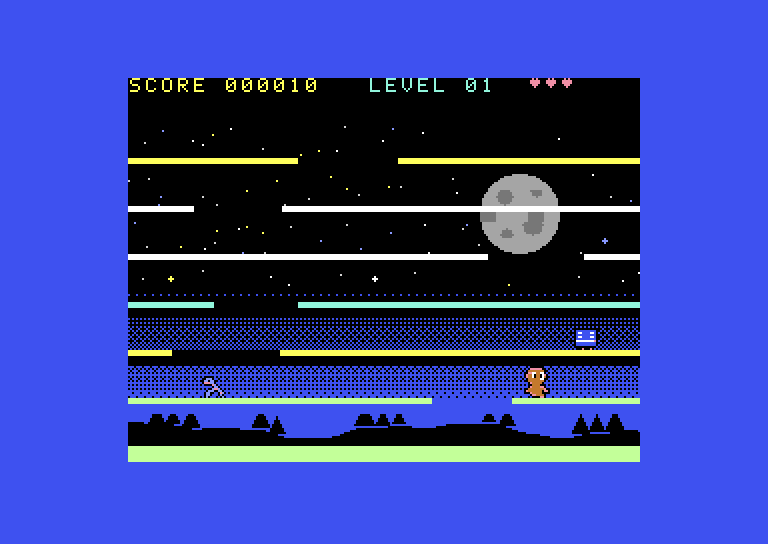
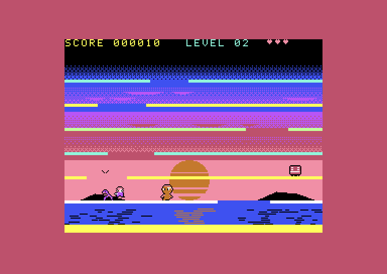
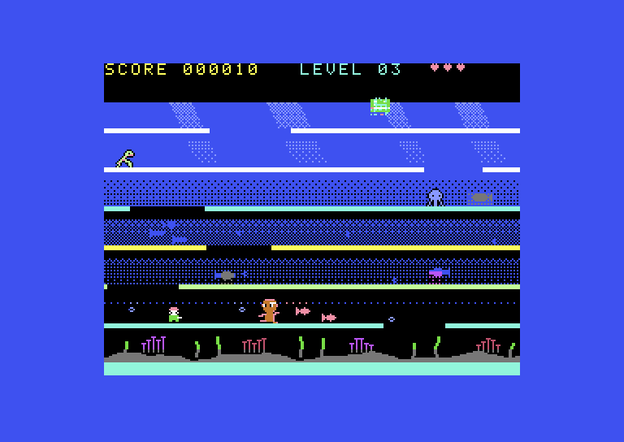
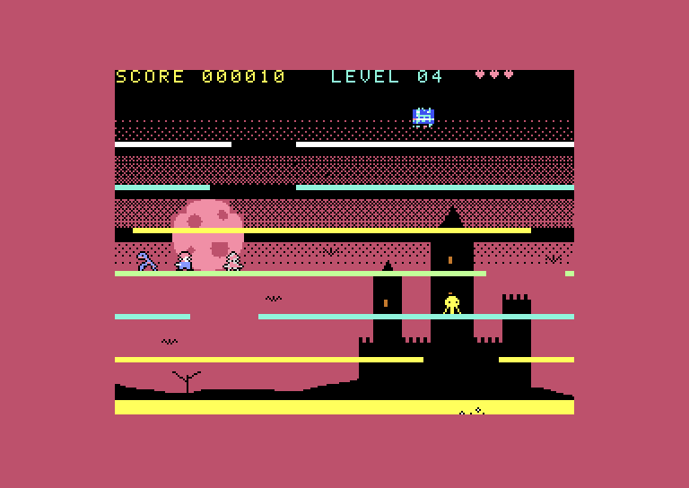
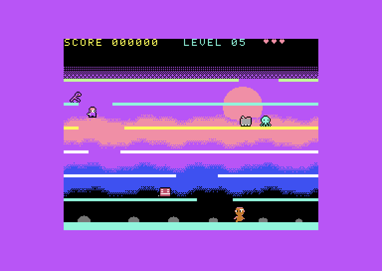
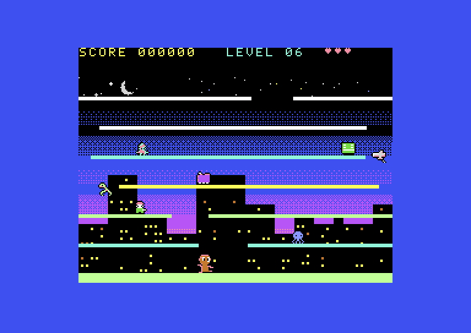
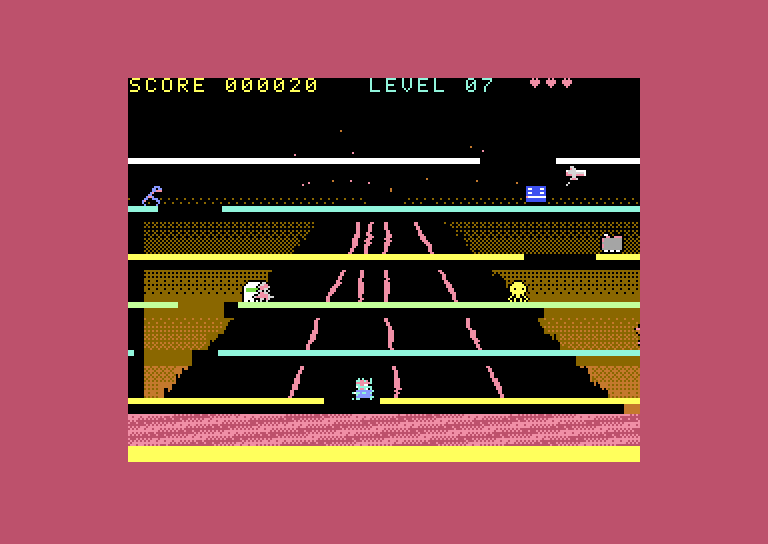
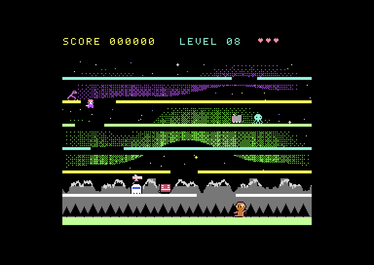
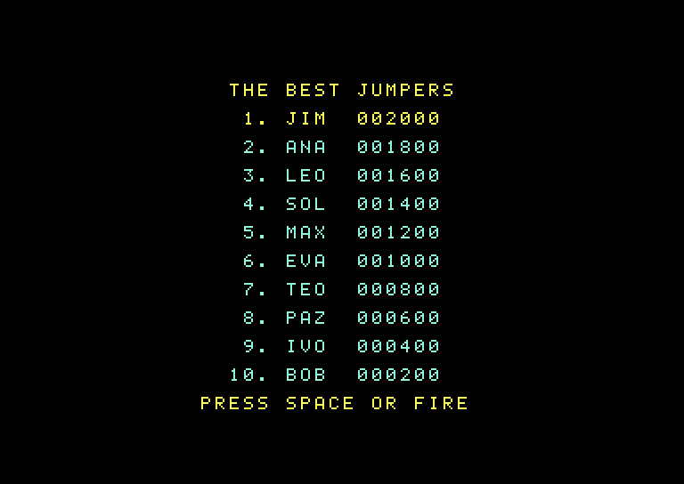
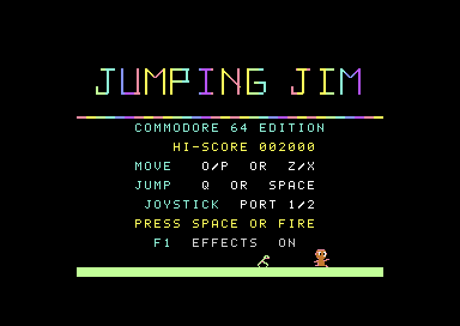

SEVEN FLOORS UPSIETE PISOS HACIA ARRIBA
Jim has to climb seven floors by jumping through gaps that keep sliding sideways. Time the jump right and he goes up a floor; get it wrong and he bumps his head on the ceiling and drops back to where he started.
Jim tiene que subir siete pisos saltando por los huecos, que no paran de deslizarse hacia los costados. Si saltas en el momento justo, sube un piso; si no, se golpea la cabeza contra el techo y vuelve a caer.
Every level brings a new kind of baddie, up to eight at a time: some walk, some hop, a robot that stops and starts, and two that chase you. Reach the top and the next level is waiting, with a new picture behind it.
Cada nivel trae un enemigo nuevo, hasta ocho a la vez: unos caminan, otros saltan, hay un robot que se detiene y arranca, y dos que te persiguen. Llega arriba y te espera el nivel siguiente, con un paisaje nuevo de fondo.
EIGHT LEVELSOCHO NIVELES









NEW IN THIS PORTLO NUEVO DE ESTA VERSIÓN
- A top-10 high score table with arcade-style initials, saved on the disk.
- A picture behind every level: a moonlit night, a sunset over the sea, the deep sea, a castle under a blood moon, misty mountains, a city at dusk, a volcano and the northern lights.
- The screen shakes when Jim bumps his head or lands after a fall, and the baddies give a little hop.
- The original music, converted for the C64's SID chip.
- Baddies falling to the ground floor dematerialise and reappear at the top.
- One program for PAL, NTSC and Drean machines, at the same speed and in tune on all three.
- Una tabla con los 10 mejores puntajes y las iniciales al estilo de los arcades, guardada en el disco.
- Un paisaje detrás de cada nivel: una noche de luna, un atardecer sobre el mar, el fondo del mar, un castillo bajo una luna roja, montañas entre la niebla, una ciudad al anochecer, un volcán y la aurora boreal.
- La pantalla se sacude cuando Jim se golpea la cabeza o cae, y los enemigos dan un saltito.
- La música original, convertida para el chip de sonido SID de la C64.
- Los enemigos que caen hasta la planta baja se desmaterializan y vuelven a aparecer arriba.
- Un solo programa para máquinas PAL, NTSC y Drean, con la misma velocidad y afinación en las tres.

The backgrounds and the screen shake can be switched off with F1 on the title screen.
Los paisajes y la sacudida se pueden apagar con F1 en la pantalla de título.
CONTROLSCONTROLES
| Keyboard | Teclado | Joystick | ||
|---|---|---|---|---|
| Left | Izquierda | O oro Z | Left | Izquierda |
| Right | Derecha | P oro X | Right | Derecha |
| Jump | Saltar | Q oro SPACE | Up or fire | Arriba o disparo |
| Start | Empezar | SPACE oro RETURN | Fire | Disparo |
The joystick works in either port.
El joystick funciona en cualquiera de los dos puertos.
DOWNLOADDESCARGA
Version 1.1.1 for PAL, NTSC and Drean machines · 57 KBVersión 1.1.1 para máquinas PAL, NTSC y Drean · 57 KB
What's inside
Qué trae
.d64disk image.prgfile- A short README, the license and the notice with the credits
- Imagen de disco
.d64 - Archivo
.prg - Un README breve, la licencia y el aviso con los créditos (en inglés)
What you need
Qué necesitas
A Commodore 64 (PAL, NTSC or Drean) with a disk drive or an equivalent, a joystick or just the keyboard. Or an emulator such as VICE.
Una Commodore 64 (PAL, NTSC o Drean) con disquetera o un equivalente, un joystick o solo el teclado. O un emulador como VICE.
How to load it
Cómo cargarlo
Type LOAD"*",8,1, then RUN. The game finds out by
itself whether the machine is PAL, NTSC or Drean, and shows it on the credits screen.
The high scores are saved on the disk, so don't write-protect it.
Escribe LOAD"*",8,1 y después RUN. El juego
averigua solo si la máquina es PAL, NTSC o Drean, y lo muestra en la pantalla de créditos.
Los récords se guardan en el disco, así que no lo protejas contra escritura.
Source code
Código fuente
Free software under the MIT license, at github.com/czayas/jumpingjim.
Software libre con licencia MIT, en github.com/czayas/jumpingjim.
THE STORYLA HISTORIA
Jumping Jim was created by roman126 for the ZX Spectrum Next, as an AI-assisted reimagining of the classic Jumping Jack (Imagine Software, 1983). The design, graphics and music are his. You can find the original at roman126.itch.io.
Jumping Jim fue creado por roman126 para la ZX Spectrum Next, como una reinterpretación hecha con ayuda de la inteligencia artificial del clásico Jumping Jack (Imagine Software, 1983). El diseño, los gráficos y la música son suyos. El original está en roman126.itch.io.
Carlos Zayas ported it to the Commodore 64 with his permission, with the help of Claude, by Anthropic: the Z80 code was studied and rewritten in 6502 assembly, and the graphics and sound were converted for the C64. Thank you, roman126!
Carlos Zayas lo llevó a la Commodore 64 con su permiso, con la ayuda de Claude, de Anthropic: el código Z80 se estudió y se reescribió en ensamblador 6502, y los gráficos y el sonido se convirtieron para la C64. ¡Gracias, roman126!